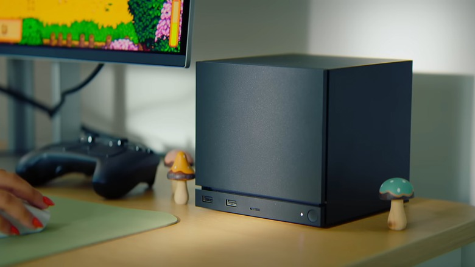

Valve lo viene prometiendo desde noviembre de 2025 y las señales de que el lanzamiento es inminente se acumulan: esta semana se confirmaron las cuatro configuraciones oficiales de la Steam Machine, y según informes de logística, ya llegaron 50 toneladas de hardware a Estados Unidos. Esto va en serio.
Las cuatro configuraciones
La Steam Machine va a estar disponible en cuatro versiones según almacenamiento y si viene con el nuevo Steam Controller incluido:
- 512 GB sin controller
- 512 GB con controller
- 2 TB sin controller
- 2 TB con controller
El precio todavía no está confirmado de forma oficial, pero Valve dejó en claro que va a ser "comparable a una PC con specs similares" y que se posiciona en el segmento de entrada del espacio PC. En la práctica eso significa que va a costar más que los $499 del PS5 —probablemente arranque en torno a los $700 en la config básica— y que el costo de la RAM por la crisis de componentes está presionando esos precios al alza. Valve ya postergó el lanzamiento una vez por ese motivo.
Specs confirmadas
El hardware de adentro ya está definido: CPU AMD Zen 4 semi-custom con 6 núcleos y hasta 4,8 GHz, GPU RDNA 3 semi-custom con 8 GB de GDDR6 dedicados, 16 GB de RAM DDR, y el SSD NVMe de 512 GB o 2 TB según la config. También tiene WiFi 6E, Bluetooth 5.3 y un adaptador 2.4 GHz integrado para el Steam Controller. Puertos: 2x USB 2.0, 2x USB 3.2 Gen 1, 1x USB-C, DisplayPort 1.4 y HDMI 2.0.
Para jugar, Valve dice que "la mayoría de los juegos de Steam andan bien en 4K 60FPS" usando FSR de AMD para upscaling. Digital Foundry ya alertó que los 8 GB de VRAM podrían quedar cortos en algunos titles AAA pesados —menos que la PS5 base—, así que habrá que ver cómo se porta en la práctica con títulos exigentes.
¿Y los juegos?
Acá está la propuesta diferencial: la Steam Machine corre SteamOS, la versión Linux de Valve, más Proton para compatibilidad con juegos de Windows. Todo lo que esté verificado para Steam Deck va a funcionar automáticamente en la Steam Machine. En la práctica, eso son miles de juegos desde el día uno, incluidos todos los juegos que ya tenés en tu biblioteca de Steam.
El talón de Aquiles sigue siendo el anti-cheat: algunos juegos competitivos como Valorant no funcionan en Linux. Valve espera que el lanzamiento de la Steam Machine cambie la ecuación y motive a los devs a habilitar el soporte.
¿Cuándo llega?
Valve confirmó "primera mitad de 2026" como ventana de lanzamiento. Con 50 toneladas de hardware ya en suelo americano y el sistema de reservas por goteo anunciado (solo 20.000 unidades en el primer batch, un límite de una por persona), el lanzamiento parece estar muy cerca. Si te interesa, conviene estar atento a la página de Steam Hardware para cuando se abran las reservas.
Para Argentina, la disponibilidad directa va a ser el desafío. La Steam Machine no va a llegar de forma oficial en el corto plazo, así que el camino probable es la importación. Pero con la librería de Steam que ya tenemos todos, este es sin dudas uno de los lanzamientos de hardware más interesantes del año.